UX Design | Illustration | Project Management
I enhanced the digital experience for Anew Behavioral Health, designing a responsive website, custom illustrations, and an animated brand video to bring their story to life.
This resulted in a more welcoming experience, making mental health care feel personal and inviting all while increasing instant-access therapy users by 12%.
The existing website lacked the clarity, accessibility, and streamlined functionality needed to meet users' needs.
Design a fully responsive website with a cohesive brand identity, featuring an engaging animated acorn video to establish user trust.
The site provides seamless access to online therapy, streamlined administrative forms, and a clear, informative resource for prospective employees interested in joining Anew Behavioral Health.
Empathy Sessions, User Personas, Storyboarding, User Flows, Wireframes, UI Design, Usability Testing
Figma, Adobe Illustrator, After Effects, Teamwork, Visual Studio Code
Lead Designer (Animation, Brand Design, Illustration, Character Design, Project Management)
My team worked with Anew to ensure we had a good understanding of three diverse users that may visit the site. During this time, we held an empathy session, crafted three user personas, developed user flows, and created site maps for the front end and admin panel.
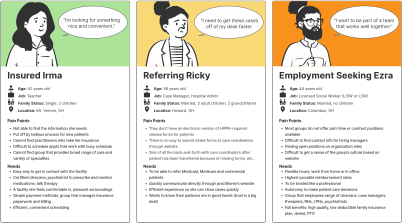
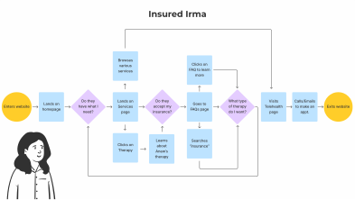
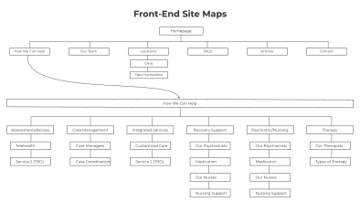
Users needed to feel comfortable and excited about seeking help from Anew. We crafted a narrative featuring a main character that effectively depicted the challenges and difficulties experienced by our user, "Insured Irma." My team used an affinity diagram to begin our character design process, a mood board to shape the visuals, sketching for form and features, and After Effects for the final animation.My team worked with Anew to ensure we had a good understanding of three diverse users that may visit the site. During this time, we held an empathy session, crafted three user personas, developed user flows, and created site maps for the front end and admin panel.

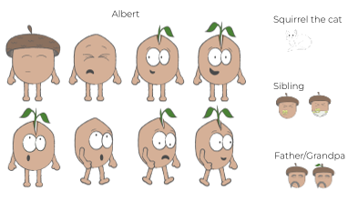
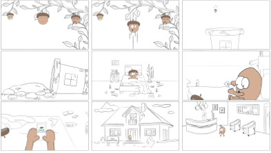

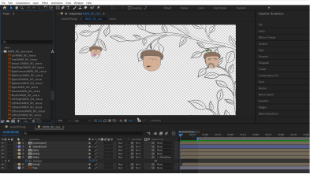
Visual design played a pivotal role in building trust and fostering user comfort. We aimed for an interface that was not only user-friendly but also playful and enjoyable for everyone. To achieve this, we opted for a style guide that exuded a cheerful and delightful ambiance, streamlined our design with digital wireframes, incorporated animations to humanize employees, and integrated hand-drawn visuals to maintain consistency and inspire trust throughout the user experience. We scaled back our original idea for the "Our Team" page to include only long-term staff members. This decision allowed us to save time, and allowed those managing the website to avoid having to continually record audio for new team members.My team worked with Anew to ensure we had a good understanding of three diverse users that may visit the site. During this time, we held an empathy session, crafted three user personas, developed user flows, and created site maps for the front end and admin panel.
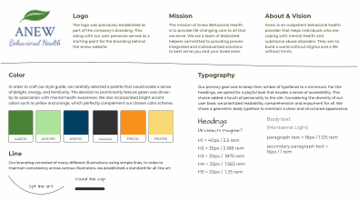
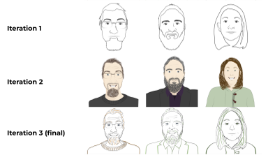
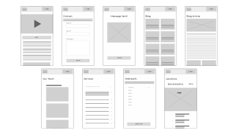
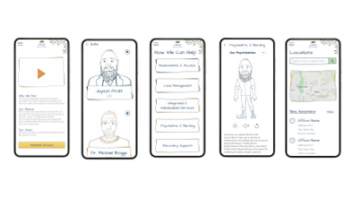
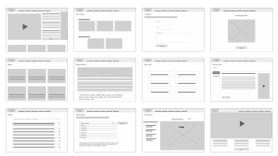
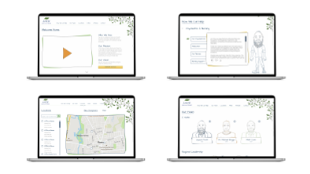